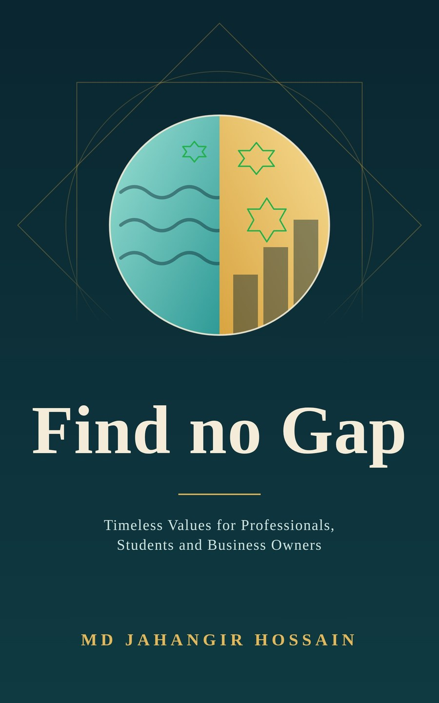

Find no Gap
Timeless Values for Professionals, Students and Business Owners
Thirteen values from the Quran, explained in plain language and proven by real people, from a merchant who asked for a market to a professor who lent $27. Practical for the office, the classroom and the shop.
- 📱 Read on any device
- 🏪 Apple Books · Kobo · Barnes & Noble
- ⏱️ Start with any chapter

Integrity today → success you can be proud of → wealth that lifts others
Watch the ad
A quick look at what the book offers and why values come before strategy.

What you gain from reading
Tactics matter, but character decides who is trusted. These are the values that carry people through school, work and trade.
Balance
Stop treating ambition and faith as rivals. Give worship, work, rest and family their due.
Action over waiting
Hope is not a plan. Learn to start small, today, with what you have.
Trust that lasts
Honest dealing and kept promises build a name people return to and recommend.
Fair, clear agreements
Justice and written terms protect relationships before problems begin.
Patience when results lag
See how persistence turned 5,127 prototypes and years of rejection into success.
Knowledge and teamwork
Keep learning, ask for advice and plan well, then trust in Allah.
One value, three lenses
Every chapter shows how its principle applies at work, in study and in business, then closes with two questions to help you act.
For professionals
Report your work accurately, keep learning when no one is watching and treat your job as a way to serve, not only to earn.
For students
Daily effort beats last-minute panic. Do your own work and plan study and rest with equal seriousness.
For business owners
Describe products truthfully, price fairly, deliver what you promised and ask what your business gives back.
Wealth that lifts others
In this book, success never ends with the self. Real stories show what happens when people with means or ability reach out to those who need a hand.
🏪 Abdur Rahman ibn Awf
He asked for a market, not a handout, built real wealth and, according to early reports, spent heavily for his community. Chapter 1
💵 Muhammad Yunus
A $27 loan from his own pocket helped 42 villagers pay off their moneylenders and led to Grameen Bank and a Nobel Peace Prize. Chapter 2
🏠 Warren Buffett
He lived modestly for decades, then announced he would give away the great majority of his fortune. Chapter 9
Before and after the book
Small daily choices shape a life. Here is what practising one value at a time can change.
Before
- Faith and career feel like rivals
- Waiting for the “right time” to start
- Shortcuts that look good only while watched
- Wealth seen as something only to keep
- No clear value to practise first
After
- Work and worship travel together
- A small first step taken today
- Results that stay true, watched or not
- Means used to lift others up
- One value a day, with questions to act on it
An honest note from the book: good values do not guarantee quick riches. They promise a life with integrity, direction and peace of mind.
What’s inside: 13 values, 13 true stories
An introduction on why values come before strategy, thirteen chapters, and a closing daily practice. Read them in any order.
- ⚖️Balance Between This World and the NextAbdur Rahman ibn Awf, the merchant who asked for a market
- 🚀Effort and ActionMuhammad Yunus and the first twenty-seven dollars
- 🔍Honesty and Fair DealingThe car that cheated its own test
- 🤝Trustworthiness and Keeping PromisesThe Tylenol recall of 1982
- 🕊️Justice and FairnessMandela and the Truth and Reconciliation Commission
- 📝Documenting AgreementsThe spacecraft lost to a unit of measure
- ⏳Patience and PerseveranceJames Dyson and the 5,127 prototypes
- 🙏GratitudeThe gratitude experiment
- 🌿Moderation and Avoiding WasteWarren Buffett and the house on Farnam Street
- 📚Seeking KnowledgeFatima al-Fihri and the University of al-Qarawiyyin
- 👥Consultation and TeamworkThe Trench of Medina
- 🧭Trust in Allah Alongside PlanningThe Hijrah, a journey planned in every detail
- 🌅When Success Is DelayedHarland Sanders and the long road to success
Start in three steps
Get the ebook
Choose Apple Books, Kobo or Barnes & Noble and read on your phone, tablet or e-reader.
Pick one value
Choose the chapter you most need today. A single value practised daily beats fourteen admired from a distance.
Reflect and act
Answer the two questions at the end of the chapter and take one small step this week.
Questions readers ask
Who is Find no Gap for?
Professionals, students and business owners. Every chapter shows how its value applies in all three settings.
Do I have to read the chapters in order?
No. Pick the value you most need today and begin there. Each chapter stands on its own.
Does the book promise wealth?
No. It says good values do not guarantee quick riches. They give a life with integrity, direction and peace of mind.
Are the Quran verses word-for-word translations?
No. Verses are given as paraphrased meanings and marked with surah and ayah numbers, so you can read the full text in a translation you trust. For rulings, consult a qualified scholar.
Where can I buy it?
As an ebook on Apple Books, Kobo and Barnes & Noble. Use the buttons below.
Is it a physical book?
No. It is an ebook, so there is no shipping. You read it in the store’s reading app or on an e-reader.
About the author: Md Jahangir Hossain is a software developer and trainer from Bangladesh.
Find no gap between success and values
Thirteen values. Thirteen true stories. Choose your store and start reading today.